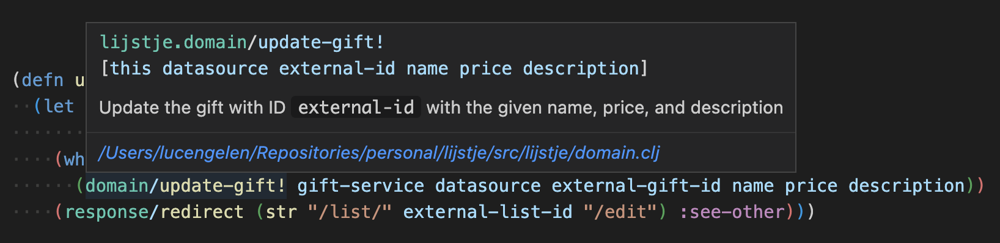

Consider the following function, which
(defn update-gift [{:keys [datasource]} request]
(let [{:keys [external-list-id external-gift-id]} (:path-params request)
{:keys [name ok price description]} (:params request)]
(when ok
(domain/update-gift! datasource external-gift-id name price description))
(response/redirect (str "/list/" external-list-id "/edit") :see-other)))
The function domain/update-gift! persists the changes to the database. It has a side effect, which makes it an impure function. Because update-gift uses domain/update-gift!, it's impure too.
You could argue that this fact alone is a reason to refactor this code. Generally speaking, pure functions are easier to test and easier to reason about, which are both good reasons to prefer pure functions over impure ones.
For simple apps, however, you could also argue that there's not much to reason about anyway, and refactoring may not be worth the effort. What's more, using with-redefs to replace the impure function domain/update-gift! would make testing quite straightforward.
Because this blog post is about dependency injection, we better find another reason to refactor update-gift and apply some more dependency injection. Luckily, we can pretend that we want to replace the function domain/update-gift! with a function that uses a completely different method to persist gifts. That's not something you would do with with-redefs.
Let's look at the (spoiler alert) naive approach where we introduce a parameter to inject the function domain/update-gift! directly as a function.
(defn update-gift [{:keys [datasource update-gift!]} request]
(let [{:keys [external-list-id external-gift-id]} (:path-params request)
{:keys [name ok price description]} (:params request)]
(when ok
(update-gift! datasource external-gift-id name price description))
(response/redirect (str "/list/" external-list-id "/edit") :see-other)))
As I mentioned above, the first argument to the function update-gift is a map of dependencies. In the example above, the key update-gift! of that map should map to a function for persisting updated gifts.
The downside of this approach is that there's no static analysis that your IDE can apply to provide you with useful information about this function. In fact, it can't even tell you that the key update-gift! maps to a function at all. You yourself have to remember that update-gift! is a function that takes a datasource, an external gift ID, a name, a price, and a description, in that order. If you forget, you have to navigate to the place where you call update-gift and see what it was again that you inject under the key update-gift!.
You could argue that this is what you get when you use a dynamically typed language instead of a statically typed one, and you would be right. However, there are good reasons to prefer dynamically typed languages over statically typed ones, and there are ways around this particular problem.
We can use protocols to help static analysis tools a little. A protocol is a named set of named methods and their signatures. They're similar to Java's interfaces.
The following snippet shows the definition of a simple protocol named GiftService. This protocol defines a single method update-gift!, which takes a concrete implementation of the protocol as first argument together with a number of additional arguments.
(defprotocol GiftService
(update-gift!
[this datasource external-id name price description]
"Update the gift with ID `external-id` with the given name, price, and description"))
There are a number of ways to create concrete implementations of protocols. The following snippet shows one way, which uses reify.
(defn create-gift-service []
(reify GiftService
(update-gift!
[_ datasource external-id name price description]
(db/update-gift! datasource {:id external-id
:name name
:price price
:description description}))))
The snippet shows the definition of a constructor function create-gift-service, which creates a concrete implementation of the protocol GiftService by providing an implementation of the method update-gift!. This implementation ignores the gift service itself (hence the underscore) and passes its arguments to another function db/update-gift!.
In practice, most services would have more than one method, and these methods would do more than directly call a single function. The service could perform some validation, for example, or combine a number of more low-level functions that interact with a database.
Here's the same update-gift function again. This time, a gift-service is injected as a dependency.
(defn update-gift [{:keys [datasource gift-service]} request]
(let [{:keys [external-list-id external-gift-id]} (:path-params request)
{:keys [name ok price description]} (:params request)]
(when ok
(domain/update-gift! gift-service datasource external-gift-id name price description))
(response/redirect (str "/list/" external-list-id "/edit") :see-other)))
This function is pure, like the previous version, which makes it easier to reason about and test. Because we're injecting a service and applying a method from a protocol to it, there's more information to work with for static analysis tools. The image below shows how such a tool can show the argument list and documentation of the protocol method domain/update-gift!.

Whether or not this final version is better than the first version depends a lot on the size of the app it is part of, the plans for this app, the team working on the app, etc. The point of this post is not to convince you that you should apply dependency injection where you can or that you should always use protocols when you do apply it. The point of this post is to show you that you can have your cake and eat it when it comes to dynamically typed languages and static analysis.
Published: 2023-01-29
Tagged: Clojure